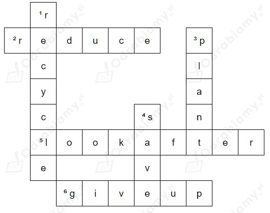

Uwaga! Wstawione odpowiedzi zostały pogrubione w tłumaczeniu.
Poziomo
2. reduce
(zredukować zanieczyszczenie)
5. look after
(troszczyć się o środowisko)
6. give up
(zrezygnować z plastiku)
Pionowo
1. (przykład)
3. plant
(sadzić drzewa)
4. save
(oszczędzać wodę)

1 - d (zagrożone gatunki)
2 - f (farmy wiatrowe)
3 - e (energia słoneczna)
4 - b (energia odnawialna)
5 - a (globalne ocieplenie)
6 - c (zmiana klimatu)
Uwaga! Wybrane odpowiedzi zostały pogrubione w tłumaczeniu.
1. throw away, mend
(Nie wyrzucaj starych rzeczy, takich jak ubrania. Zamiast tego spróbuj je naprawić - w ten sposób będzie można dalej ich używać.)
2. pollute
(Jeśli zanieczyścimy wszystkie nasze rzeki, co będziemy pić?)
3. pesticides
(Rolnicy używają środków owadobójczych do ochrony swoich upraw, ale problem polega na tym, że zabijają one wszystkie owady, a to nie jest dobre dla środowiska.)
4. repurpose, landfills
(Kiedy ponownie wykorzystujesz stare rzeczy, na przykład zrobisz lampę ze starej butelki, ograniczasz liczbę rzeczy, które trafiają na wysypiska śmieci.)
Uwaga! Wstawione odpowiedzi zostały pogrubione w tłumaczeniu.
1. destroy
2. cut down
3. Deforestation
4. protect
5. endangered
6. solar
7. Renewable
species
Tłumaczenie:
Co jest najważniejsze, aby pomóc środowisku?
Dbać o świat przyrody! Nie wolno nam niszczyć lasów ani ścinać więcej drzew, niż jest to konieczne. Musimy sadzić ich o wiele więcej. Wylesianie jest bardzo złe dla ziemi, ponieważ drzewa chronią glebę. I powinniśmy dbać o wszystkie gatunki zagrożone. Nikt nie chce, aby więcej zwierząt zniknęło na zawsze.
- Sam29
Zielona energia! Powinniśmy korzystać z energii słonecznej i budować więcej farm wiatrowych - w końcu słońce i wiatr nic nie kosztują! Energia odnawialna jest właściwym rozwiązaniem.
- GreenKat
1. a (zakazać plastiku)
2. b (naprawić stare ubrania)
3. a (oszczędzać wodę)
4. c (ponownie przetworzyć stare rzeczy)
Uwaga! Wstawione odpowiedzi zostały pogrubione w tłumaczeniu.
1. fox hunting
(zakazać: plastikowych toreb / palenia / broni palnej / polowań na lisy)
2. an idea in someone's mind
(zasadzić drzewa/nasiona/kwiaty / zaszczepić pomysł w czyjejś głowie)
3. your skin from the sun
(chronić: środowisko / zagrożone gatunki / skórę przed słońcem)
4. an opportunity
(marnować: czas / pieniądze / energię / okazję)
5. someone's life
(oszczędzać czas/pieniądze/wodę / uratować komuś życie)